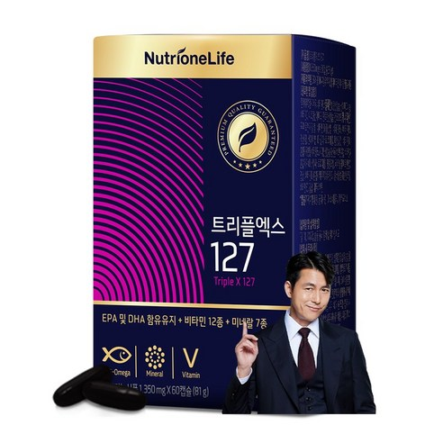
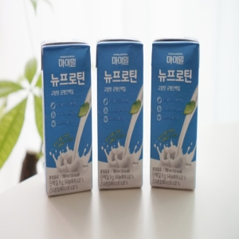
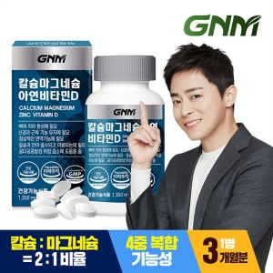
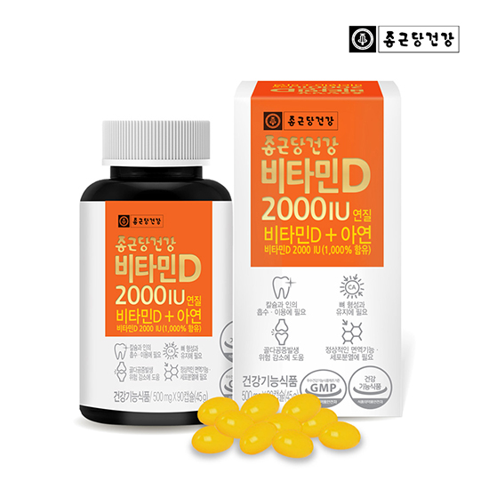
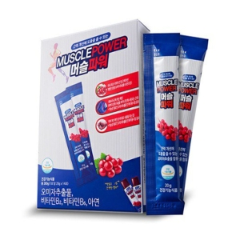

로딩중
건강보조식품
카테고리
검색
나의정보





전체보기
비타민
홍삼,인삼,녹용
뷰티푸드
헬스,다이어트
비타민
홍삼,인삼,녹용
뷰티푸드
헬스,다이어트
섭취대상
효능
타입
생균
섭취량
브랜드
유아
10대
20대
30대
40대
50대
60대
70대
눈건강
면역력
영양보충
피로회복
뼈건강
피부
치아
캡슐
정
액상
분말
츄어블
1개월분
2개월분
3개월분
브랜드1
브랜드2
브랜드3
브랜드4
브랜드5
브랜드6
브랜드7
총
50,478,299
개 상품
상세검색사이드바
그리드모드
인기순
인기순
최저가순
최고가순
신규등록순
판매량순
출시예정상품
상품평많은순